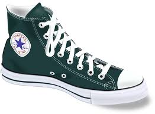

In Malden Massachusetts 1908 the company Converse was created. It didn't really do much till 1917 when the company designed a shoe all later athletic shoes would look at. They called the shoe Non-Skids because it stopped a good amount of skidding when playing basketball. In 1923 the American basketball player Charles Chuck Taylor joined a basketball team sponsoured by Converse. Taylor would go to schools across the country to teach kids the fundementals of basketball, and sell the shoe made by converse. As Taylor was doing the sales and being an athlete in general, he noticed problems with the shoe. We don't know exactly what he noticed now, but he gave ideas to converse that made the shoe that much better.

© 2017 Grant Harvey. All Rights Reserved.